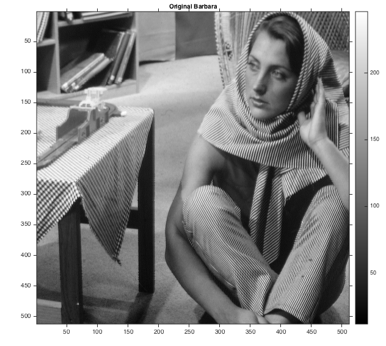
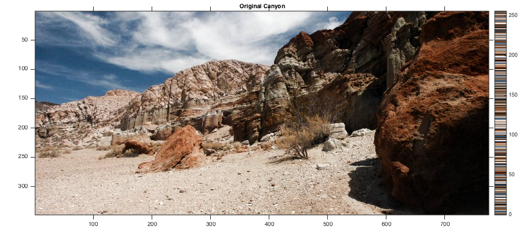
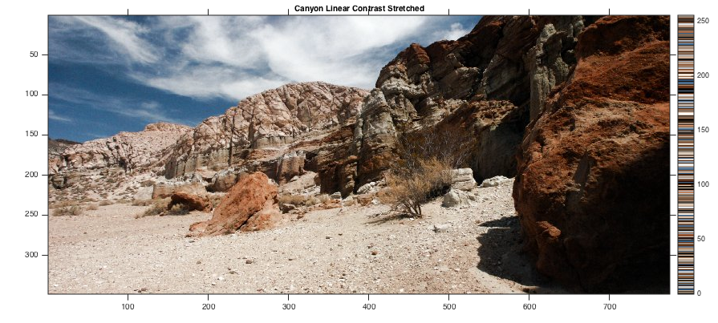
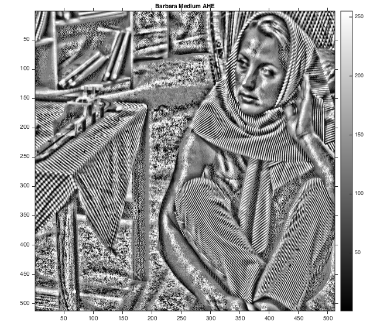
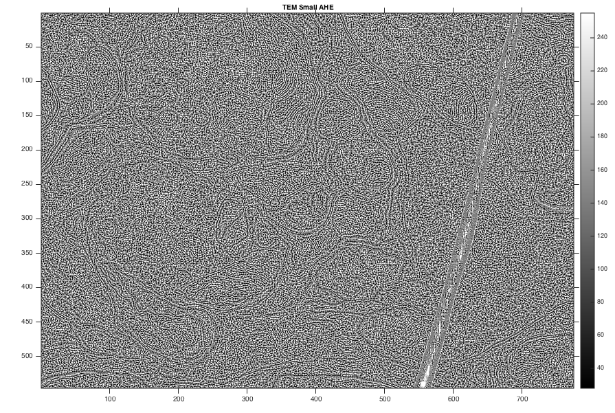
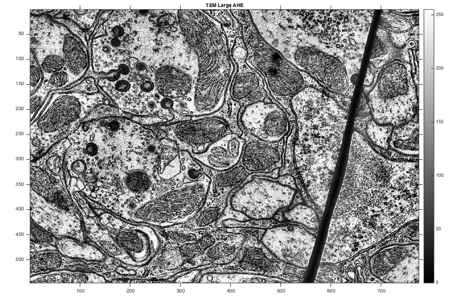
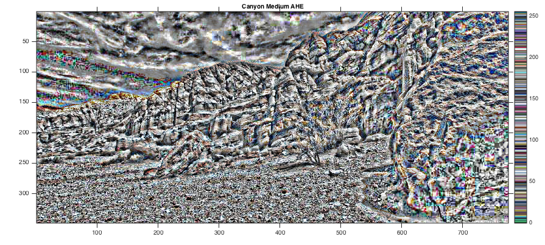
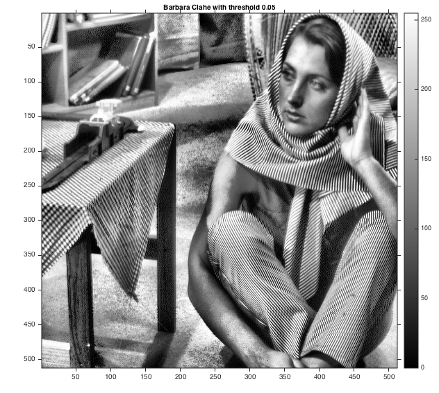
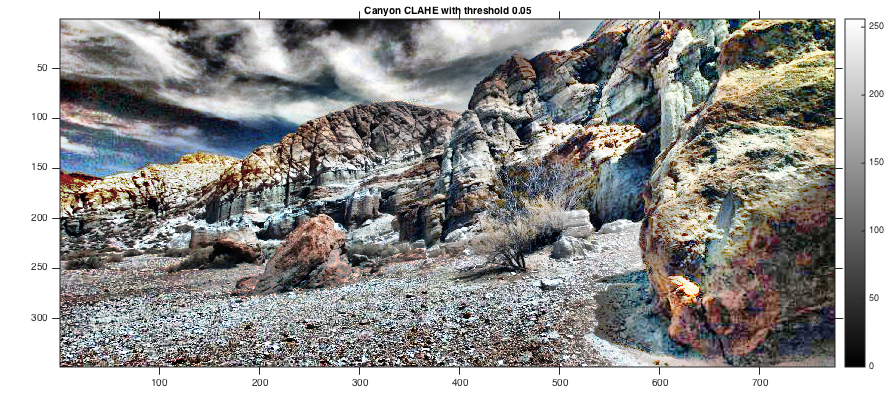

Question 2
Objectives:
- Linear Contrast Stretching
- Histogram Equalization (HE)
- Adaptive Histogram Equalization (AHE)
- Contrast-Limited Adaptive Histogram Equalization (CLAHE)
Contents
Colormap and Helper Functions
myNumOfColors= 256; myColorScale = [ [0:1/(myNumOfColors-1):1]' , [0:1/(myNumOfColors-1):1]' , [0:1/(myNumOfColors-1):1]' ]; displayGrayScale = @(image, title) displayImageWithColorBar(image, title, myColorScale); displayColoredImage = @(image, title) displayImageWithColorBar(image, title, getColormapForRGBImage(image));
Lambda functions for AHE with low, medium and High window size
myAHEforLowWindowSize = @(image) myAHE(image, 2); myAHEforMediumWindowSize = @(image) myAHE(image, 20); myAHEforLargeWindowSize = @(image) myAHE(image, 100);
Lambda functions for CLAHE with
myCLAHEWithMediumWindowSize = @(image) myCLAHE(image, 100, 0.05); myCLAHEWithMediumWindowSizeAndHalfThreshold = @(image) myCLAHE(image, 100, 0.025);
Input files
barbara_filename = '../data/barbara.png'; canyon_filename = '../data/canyon.png'; tem_filename = '../data/TEM.png'; barbara = imread(barbara_filename); canyon = imread(canyon_filename); tem = imread(tem_filename);
Original Barbara
displayGrayScale(barbara, 'Original Barbara');
 Original Canyon
displayColoredImage(canyon, 'Original Canyon');
 Original TEM
displayGrayScale(tem, 'Original TEM');

Linear Contrast Stretching
Psuedocode:
min := min(image) max := max(image)
if (min is not equal to max): for every point p in image: I(p) := 255 * ((I(p) - min) / (max - min))
Barbara Linear Contrast Stretched
tic;
barbara_linear = myLinearContrastStretching(barbara);
toc;
displayGrayScale(barbara_linear, 'Barbara Linear Contrast Stretched');
Elapsed time is 0.017695 seconds.

TEM Linear Contrast Stretched
tic;
tem_linear = myLinearContrastStretching(tem);
toc;
displayGrayScale(tem_linear, 'TEM Linear Contrast Stretched');
Elapsed time is 0.023878 seconds.

Canyon Linear Contrast Stretched
tic;
canyon_linear = processColoredImage(canyon, @myLinearContrastStretching);
toc;
displayColoredImage(canyon_linear, 'Canyon Linear Contrast Stretched');
Elapsed time is 0.044824 seconds.
Histogram Equilization (HE)
Barbara HE
tic;
barbara_he = myHE(barbara);
toc;
displayGrayScale(barbara_he, 'Barbara HE');
Elapsed time is 0.010235 seconds.

TEM He
tic;
tem_he = myHE(tem);
toc;
displayGrayScale(tem_he, 'TEM HE');
Elapsed time is 0.018319 seconds.

Canyon HE
tic;
canyon_he = processColoredImage(canyon, @myHE);
toc;
displayColoredImage(canyon_he, 'Canyon HE');
Elapsed time is 0.031594 seconds.

Adaptive Histogram Equalization (AHE)
Barbara AHE With Medium Window Size
tic; barbara_medium_ahe = myAHEforMediumWindowSize(barbara); elapsedTime = toc; if elapsedTime > 300 save('../images/barbara_medium_ahe.mat', 'barbara_medium_ahe'); end displayGrayScale(barbara_medium_ahe, 'Barbara Medium AHE');
Barbara AHE With Small Window Size
tic; barbara_small_ahe = myAHEforLowWindowSize(barbara); elapsedTime = toc; if elapsedTime > 300 save('../images/barbara_small_ahe.mat', 'barbara_small_ahe'); end displayGrayScale(barbara_small_ahe, 'Barbara Small AHE');

Barbara AHE With Large Window Size
tic; barbara_large_ahe = myAHEforLargeWindowSize(barbara); elapsedTime = toc; if elapsedTime > 300 save('../images/barbara_large_ahe.mat', 'barbara_large_ahe'); end displayGrayScale(barbara_large_ahe, 'Barbara Large AHE');
TEM AHE With Medium Window Size
tic; tem_medium_ahe = myAHEforMediumWindowSize(tem); elapsedTime = toc; if elapsedTime > 300 save('../images/tem_medium_ahe.mat', 'tem_medium_ahe'); end displayGrayScale(tem_medium_ahe, 'TEM Medium AHE');
TEM AHE With Small Window Size
tic; tem_small_ahe = myAHEforLowWindowSize(tem); elapsedTime = toc; if elapsedTime > 300 save('../images/tem_small_ahe.mat', 'tem_small_ahe'); end displayGrayScale(tem_small_ahe, 'TEM Small AHE');
TEM AHE With Large Window Size
tic; tem_large_ahe = myAHEforLargeWindowSize(tem); elapsedTime = toc; if elapsedTime > 300 save('../images/tem_large_ahe.mat', 'tem_large_ahe'); end displayGrayScale(tem_large_ahe, 'TEM Large AHE');
Canyon AHE with medium Window Size
tic; canyon_medium_ahe = processColoredImage(canyon, @(image) myAHEforMediumWindowSize(image)); elapsedTime = toc; if elapsedTime > 300 save('../images/canyon_medium_ahe.mat', 'canyon_medium_ahe'); end displayColoredImage(canyon_medium_ahe, 'Canyon Medium AHE');
Canyon AHE with medium Window Size
tic; canyon_small_ahe = processColoredImage(canyon, @(image) myAHEforLowWindowSize(image)); elapsedTime = toc; if elapsedTime > 300 save('../images/canyon_small_ahe.mat', 'canyon_small_ahe'); end displayColoredImage(canyon_small_ahe, 'Canyon Small AHE');

Canyon AHE with Large Window Size
tic; canyon_large_ahe = processColoredImage(canyon, @(image) myAHEforLargeWindowSize(image)); elapsedTime = toc; if elapsedTime > 300 save('../images/canyon_large_ahe.mat', 'canyon_large_ahe'); end displayColoredImage(canyon_large_ahe, 'Canyon Large AHE');

Contrast-Limited Adaptive Histogram Equalization (CLAHE)
Barbara CLAHE with 0.05 Threshold
tic; barbara_clahe_high = myCLAHEWithMediumWindowSize(barbara); elapsedTime = toc; if elapsedTime > 300 save('../images/barbara_clahe_high.mat', 'barbara_clahe_high'); end displayGrayScale(barbara_clahe_high, 'Barbara Clahe with threshold 0.05');
Barbara CLAHE with 0.025 Threshold
tic; barbara_clahe_low = myCLAHEWithMediumWindowSizeAndHalfThreshold(barbara); elapsedTime = toc; if elapsedTime > 300 save('../images/barbara_clahe_low.mat', 'barbara_clahe_low'); end displayGrayScale(barbara_clahe_low, 'Barbara Clahe with threshold 0.025');
TEM CLAHE with 0.05 Threshold
tic; tem_clahe_high = myCLAHEWithMediumWindowSize(tem); elapsedTime = toc; if elapsedTime > 300 save('../images/tem_clahe_high.mat', 'tem_clahe_high'); end displayGrayScale(tem_clahe_high, 'TEM CLAHE with threshold 0.05');
TEM CLAHE with 0.025 Threshold
tic; tem_clahe_low = myCLAHEWithMediumWindowSizeAndHalfThreshold(tem); elapsedTime = toc; if elapsedTime > 300 save('../images/tem_clahe_low.mat', 'tem_clahe_low'); end displayGrayScale(tem_clahe_low, 'TEM CLAHE with threshold 0.025');
Canyon CLAHE with 0.05 Threshold
tic; canyon_clahe_high = processColoredImage(canyon, @(img) myCLAHEWithMediumWindowSize(img)); elapsedTime = toc; if elapsedTime > 300 save('../images/canyon_clahe_high.mat', 'tem_clahe_high'); end displayGrayScale(canyon_clahe_high, 'Canyon CLAHE with threshold 0.05');
Canyon CLAHE with 0.025 Threshold
tic; canyon_clahe_low = processColoredImage(canyon, @(img) myCLAHEWithMediumWindowSizeAndHalfThreshold(img)); elapsedTime = toc; if elapsedTime > 300 save('../images/canyon_clahe_low.mat', 'tem_clahe_low'); end displayGrayScale(canyon_clahe_low, 'Canyon CLAHE with threshold 0.025');